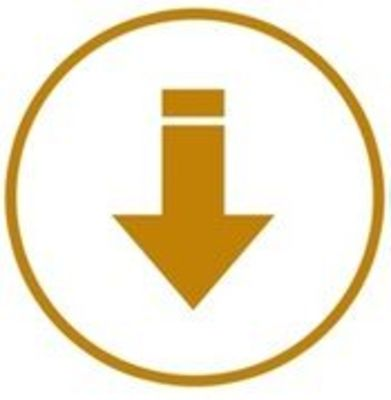
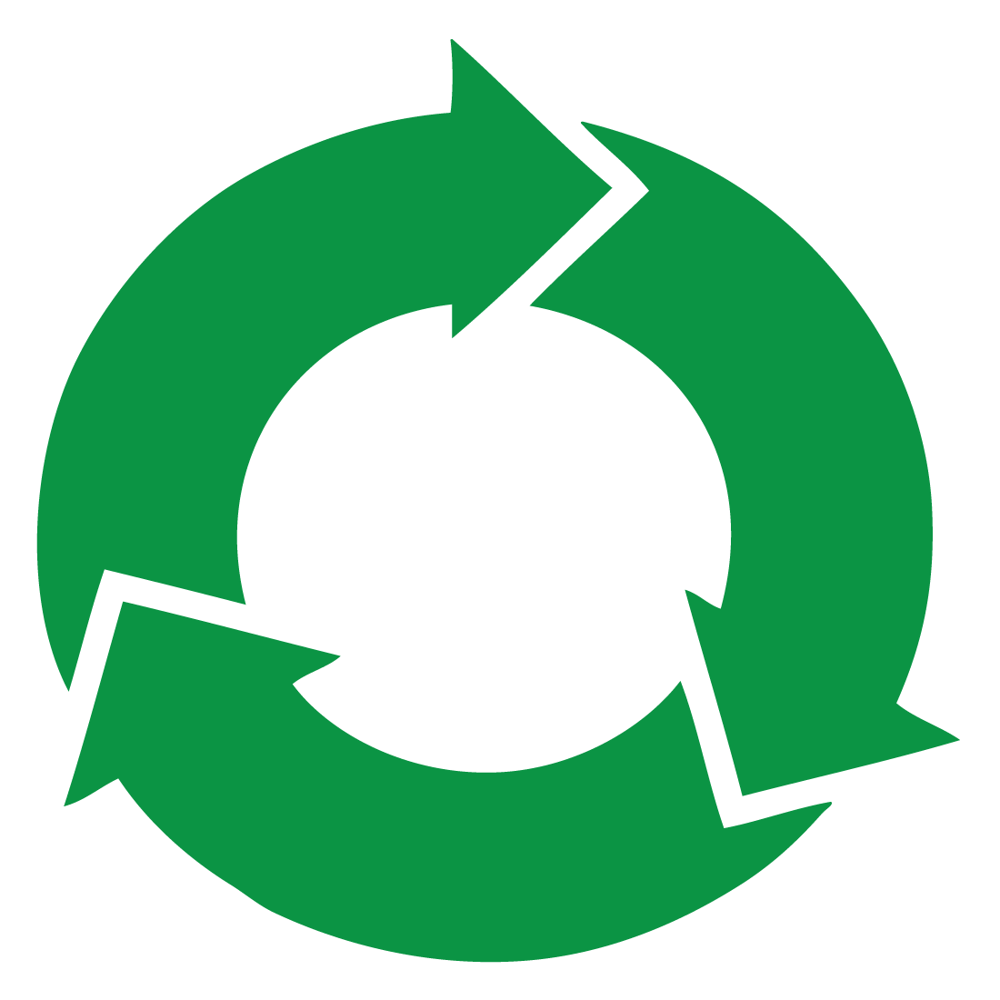
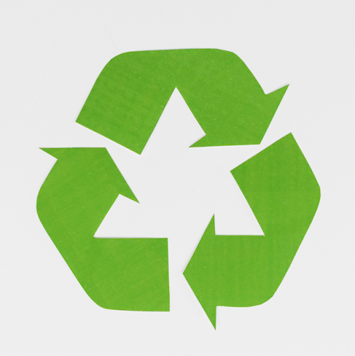

Regla de las tres erres
La regla de las tres erres, también conocida como las tres R de la ecología, o simplemente 3R, o también las tres R, es una propuesta sobre hábitos de consumo, popularizada por la organización ecologista Greenpeace, que pretende desarrollar hábitos como el consumo responsable. Este concepto hace referencia a estrategias para el manejo de residuos que buscan ser más sustentables con el medio ambiente, y específicamente dar prioridad a la reducción en el volumen de residuos generados. Durante la Cumbre del G8 en junio de 2004, el primer ministro de Japón Koizumi Junichiro presentó la iniciativa de las tres erres que busca construir una sociedad orientada hacia el reciclaje. En abril de 2005 se llevó a cabo una asamblea de ministros en la que se discutió con Estados Unidos, Alemania, Francia y otros 20 países la manera en que se puede implementar de manera internacional acciones relacionadas a las tres erres.

Reducir
Si reducimos el problema, disminuimos más el impacto en el medio ambiente. Los problemas de concienciación habría que solucionarlos empezando por esta erre. La reducción puede realizarse en dos niveles: reducción del consumo de bienes o de energía.

Reutilizar
La segunda erre más importante, igualmente debido a que también reduce impacto en el medio ambiente, indirectamente. Esta se basa en reutilizar un objeto para darle una segunda vida útil. Todos los materiales o bienes pueden tener más de una vida útil, bien sea reparándolos para un mismo uso o con imaginación para un uso diferente.

Reciclar
Esta es la erre más importante debido a que el sistema de consumo actual ha preferido usar envases de materiales reciclables (plásticos y briks, sobre todo), pero no biodegradables. De esta forma se necesita el empleo en mayor forma personal y energía en el proceso.